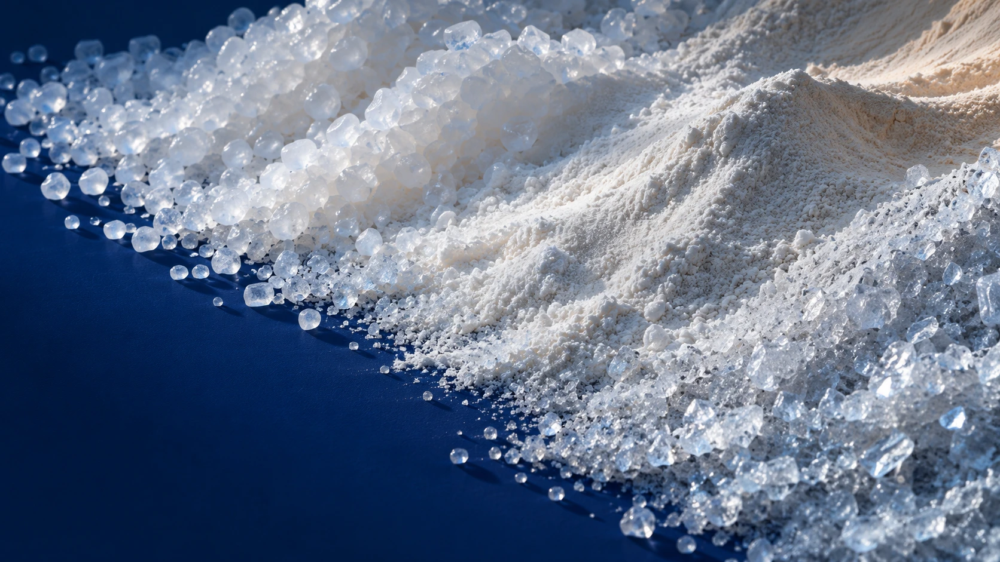
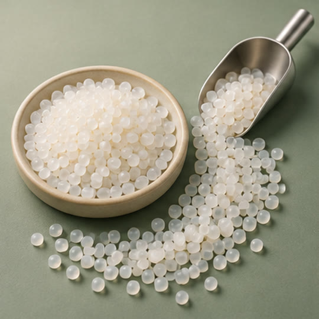
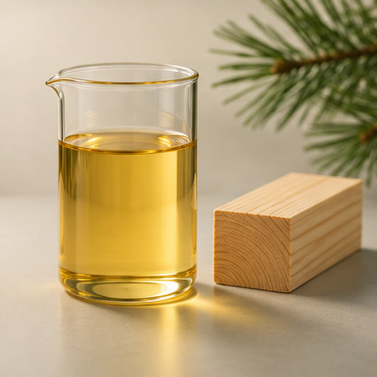

Атлас сырья
Химическое сырьё, собственные реагенты и промышленная тара.

Найти нужное сырьё
Полный каталог- Ацетат хрома 50%Собственное производство
- Моющее средство «Везение»Собственное производство
- Реагент «Чисталь»Собственное производство
- АцетонРастворители
- Нефрас С2-80/120Растворители
- МетилацетатРастворители
- ОртоксилолРастворители
- Смесевой растворитель Р4Растворители
- Этилацетат и н-пропанолРастворители
- ОЭДФККислоты и соли
- Ортофосфорная кислота 85%Кислоты и соли
- НТФКислоты и соли
- Стеариновая кислотаКислоты и соли
- Тетранатриевая соль ОЭДФККислоты и соли
- PBTCКислоты и соли
- Трилон Б ЭДТА-4NaКислоты и соли
- Динатриевая соль ЭДТА-2NaКислоты и соли
- МоноэтаноламинАмины
- ДиэтаноламинАмины
- ДиэтилентриаминАмины
- Амин DROCURE 5910Амины
- ПолиэтиленполиаминАмины
- Амин Amix 1000Амины
- Смола ПВХ 271ПВХ
- Смола ПВХ 267ПВХ
- Пластикат ПВХ ПЛМ 60F-90FПВХ
- Кабельные пластикаты ПВХПВХ
- Литьевые пластикаты ПВХПВХ
- Жирные кислоты талового маслаЛесохимия
- Лиственное таловое маслоЛесохимия
- Скипидар сульфатный очищенныйЛесохимия
- Лёгкое таловое маслоЛесохимия
- Смешанное таловое маслоЛесохимия
- Олеиновая кислота марки БЛесохимия
- Дистиллированное таловое маслоЛесохимия
- Trigonox V388Перекисные соединения
- Еврокуб б/уТара
- Металлические и пластиковые бочкиТара

Собственная продукция
Реагенты и моющие средства, которые выпускаем в Дзержинске.

Растворители
Индивидуальные и смесевые растворители для промышленности.

Кислоты и соли
Кислоты, соли и комплексообразователи.

Амины
Этаноламины и отвердители.

ПВХ
Смолы и пластикаты для кабельных и литьевых изделий.

Лесохимия
Таловые масла, жирные кислоты и очищенный скипидар.

Перекисные соединения
Промышленное сырьё на основе перекисных соединений.

Тара
Еврокубы, металлические и пластиковые бочки.
Сырьё для вашей задачи
При подборе учитываем марку, спецификацию, фасовку и требуемый объём. На площадке в Дзержинске выпускаем реагенты и моющие средства.
О компании
Контрактное производство
Если нужна партия по вашей технологии, пришлите технологическую карту и требования к продукту и упаковке.
Пять реакторов на площадке
Статьи и материалы
Все статьи
ЭДТА-2Na и ЭДТА-4Na
Как сверить форму соли и требования к спецификации перед заказом.
Читать статью
Что уточнить при выборе реагента
Сведения о воде, объёме и требуемом результате.
Читать статью
Как выбрать фасовку ацетата хрома
Канистра, бочка или еврокуб. От чего зависит выбор для конкретной партии.
Читать статьюЧто указать в запросе на выпуск партии
Какие данные нужны технологу для оценки проекта.
Читать статьюПеред заказом
Поставка, документы и выпуск по вашей технологии.
Как заказать продукцию?
Откройте карточку товара и нажмите «Запросить предложение». Укажите требуемую марку, массу или объём, нужную тару и город доставки.
Можно ли заказать небольшую партию?
Везен отгружает от одной канистры или мешка. Для некоторых позиций действует собственный минимальный объём. Уточните его в карточке или у отдела продаж.
Как узнать, есть ли товар в наличии?
Отправьте запрос с названием и требуемым объёмом. Отдел продаж подтвердит наличие, срок комплектации и стоимость.
Можно ли получить паспорт качества или безопасности?
Да, запросите нужные документы на конкретную марку и партию. Доступные ТУ и паспорта производителя размещены в разделе «Документы и поставка» карточки.
Где посмотреть фасовку?
Откройте характеристики товара. Для жидкого сырья в каталоге встречаются канистры, бочки, еврокубы и цистерны. Совместимость тары с продуктом подтверждают при заказе.
Можно ли заказать доставку в другой регион?
Укажите адрес выгрузки и размер партии. Отдел продаж уточнит возможный способ доставки и срок с учётом вида груза и фасовки.
Где забрать продукцию самовывозом?
Склад находится в промышленной зоне Дзержинска. Точный адрес, время и порядок въезда согласуйте с менеджером при оформлении заказа.
Как подобрать марку или аналог?
Сообщите требуемый CAS, обозначение по ТУ или ГОСТ и параметры из спецификации. Возможность замены оценивают по назначению и требованиям к продукту.
Как заказать выпуск по своей технологии?
Укажите продукт, объём партии и требования к упаковке. Возможность выпуска оценивают по технологической карте и оборудованию.
Как связаться с отделом продаж?
Позвоните по номеру +7 952 448-48-97 или отправьте заявку через страницу контактов.
Подберём формат поставки
Расскажите, какое сырьё нужно, где его будут использовать и какой объём планируете заказать.
Дзержинск, проспект Чкалова, 2